同心共创 链接无限！全球名校青年社群共同体启动仪式暨2024领航者说（上海）沙龙在沪举办，
上海黄浦海创青年领航发展中心同时挂牌10月27日，在上海市侨联、中国华夏文化遗产基金会的指导下，由中国华夏文化遗产基金会国际青年领航发展专项基金、上海市黄浦区侨联推动发起的“全球名校青年社群共同体”在上海市黄浦区启动。同时，“上海黄浦海创青年领航发展中心”揭牌成立，并举行2024“领航者说”（上海）沙龙活动。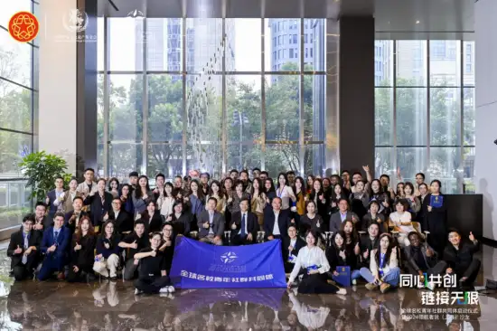
作为本次活动的亮点，“全球名校青年社群共同体”正式宣告成立。由中国华夏文化遗产基金会国际青年领航发展专项基金在上海市发起成立，以黄浦区侨联支持成立的海创青年领航发展中心为载体，搭建起连接全球名校青年社群的桥梁与平台。共同体定位为非注册性的公共服务平台，专注于服务全球名校青年社群，尤以侨界青年为主要服务对象。目标是通过共同体，发挥中外连接、文化传播及服务海归的桥梁作用，促进全球名校青年社群与各地政府及群团组织及更广泛社会资源的紧密联系与深度合作。
中国华夏文化遗产基金会理事长耿静专门为活动发来贺信，期望共同体能成为中国式现代化的人才支撑点，为社会发展贡献力量。耿静指出，专项基金自成立以来，一直致力于发现和培养卓越青年，推动中外青年领袖的交流。此次共同体的成立，正是基金会小灯泡精神的延续和深化。“我们坚信，通过共同体的努力，定能为海归青年及国际青年提供更为广阔的舞台，助力他们在创新创业、求职就业及传播中华文化等方面取得更大成就。”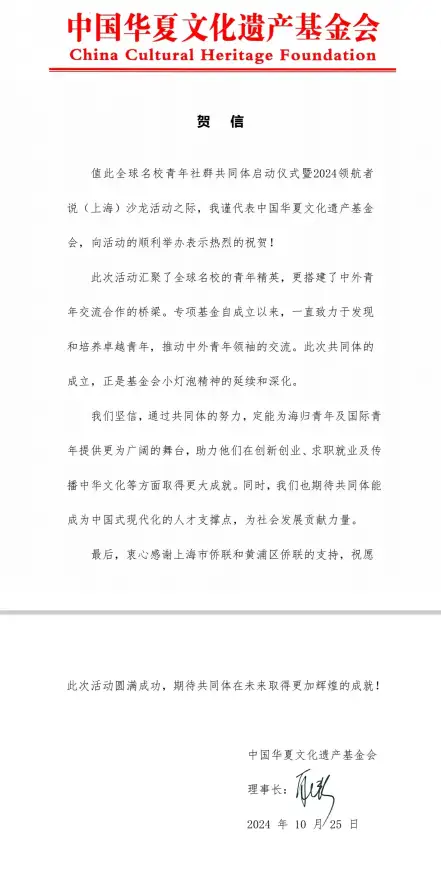
受耿静理事长的委托，中国华夏文化遗产基金会副秘书长苏润致辞表示，“全球名校青年社群共同体”的成立，汇聚全球名校的青年力量，搭建起一个交流与合作的广阔平台。
通过这一平台，有助于增进全球华夏儿女的文化认同与传承，促进中外青年领袖之间的交流与合作，推动中华文化国际传播与创新。
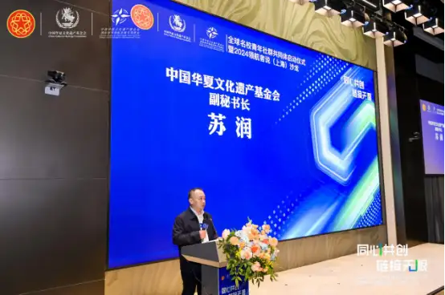
上海市侨联主席齐全胜、中国华夏文化遗产基金会副秘书长苏润、上海市侨联副主席程东、哈佛大学政治经济协会主席梁严、AWDPI亚裔女性国际发展计划发起人俞昕熠，以及英国华威大学校友社群负责人朱虹慧一起按下“全球名校青年社群共同体”启动“点亮”装置，标志着共同体正式启航。
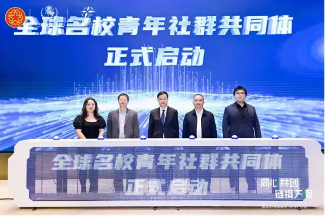
据介绍，该共同体致力于服务全球青年校友社群，聚焦于跨界合作与资源共享，旨在促进名校青年在全球范围内的深度交流。该共同体的核心目标之一是帮助全球青年领袖更好地了解中国的发展机遇，特别是在科技创新、文化传承与创新等方面的发展与政策。通过联合国内外的高校、青年社群和政府资源，该平台将为更多青年提供一个开放的信息共享和支持平台。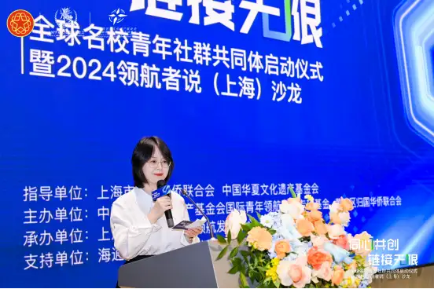
国际青年领航代表、英国曼彻斯特大学校友王梦蝶主持共同体启动仪式上海市侨联主席齐全胜表示，“全球名校青年社群共同体”首批成员包含一批全球顶级名校青年社群，形成社群联盟，这表明侨联组织将与更多全球名校青年社群及侨界青年产生连接，将开辟侨联服务侨界青年英才、服务国家和上海发展大局新的天地和前景。希望共同体成员勇当国家和社会发展进步的开拓者、善当中外民心相通的守望者、乐当青年成长和建功的推动者。
“‘全球名校青年社群共同体’的成立，不仅将开创一个海内外青年深度交流互通的平台，更是全球化背景下同题共答、共享机遇的创新之举。”上海市黄浦海外联谊会副会长施海燕表示，希望共同体广聚人才、广联资源、广架桥梁，发挥领航作用，最大程度地凝聚不同文化背景的社群力量，赋能海内外青年的成长成才，在世界文明交流互鉴中贡献积极力量。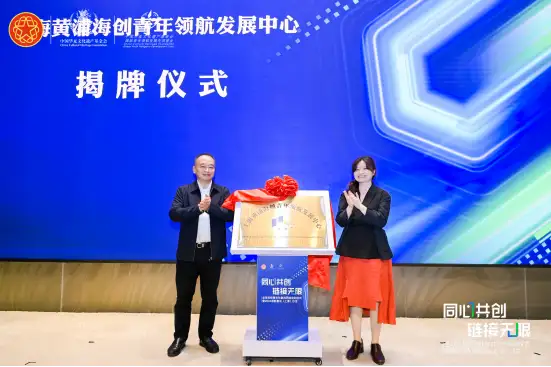
基金会副秘书长苏润和上海市黄浦海外联谊会副会长施海燕共同为“上海黄浦海创青年领航发展中心”揭牌，并签订上海市黄浦区侨联与中国华夏文化遗产基金会国际青年领航发展专项基金战略合作协议。双方将致力于汇聚来自不同领域的智慧与力量，为青年创业者提供展示才华、实现梦想的平台，共同推动黄浦、上海，乃至全国的国际化青年人才创意创新创业事业发展。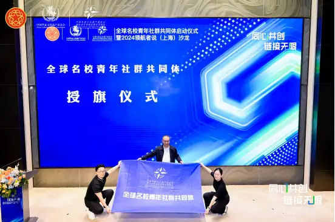
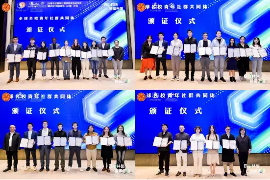
副秘书长苏润向共同体代表许迩加、朱家卉授予旗“全球名校青年社群共同体”旗帜，并与上海市侨办侨务事务处处长沈聪、上海市侨联基层工作部部长栾旭琛等分四批向“全球名校青年社群共同体”首批协同理事代表颁发“协同理事”证书。
“青年兴则国家兴，青年强则国家强”。哈佛大学政治经济协会主席梁严、斯坦福中国教育实践与创新者协会联席主席李卓瑞、英国华威大学校友社群负责人朱虹慧共同宣读《全球名校青年社群共同体上海宣言》。他们强调，“全球名校青年社群共同体始终以国际青年领航为引领，以海创领航发展中心为载体，打造成为一个开放、包容、进取的组织。我们欢迎更多有志青年加入我们，与我们携手共进，共同开创属于青年的新时代！”“在上海这座充满活力的城市，我们共同见证了全球名校青年社群共同体的诞生。让我们携手并肩，以青春之我，创造青春之世界，打造中国式国际青年共同体，为构建人类命运共同体贡献青春力量！”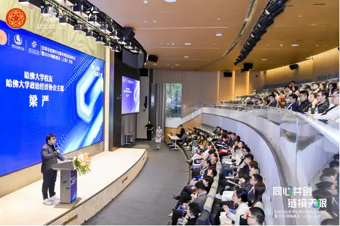
在启动仪式上，哈佛大学政治经济协会主席梁严代表共同体首批协调理事发言表示，作为全球名校青年社群共同体首批协同理事，愿以此为新起点，汇聚海归、侨界青年人才资源，发挥跨国青年社群的独特优势，为推动科技创新、服务高水平对外开放、建设具有世界影响力的社会主义现代化国际大都市贡献力量。
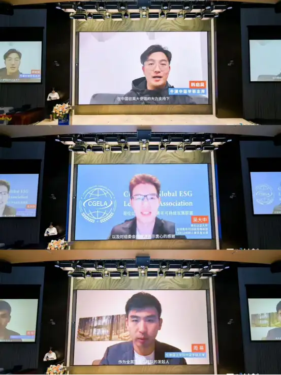
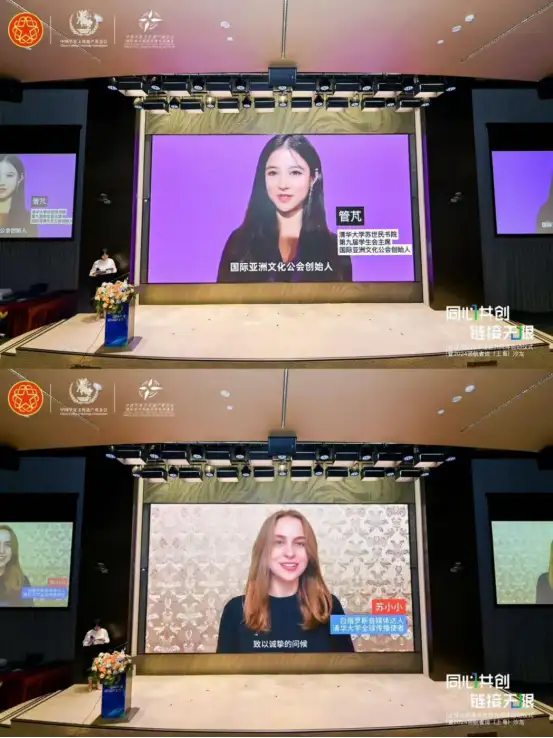
Zlead全球科创峰会创始人胡心辰、牛津中国学联主席韩启昊、哥伦比亚大学学生社团全球青年可持续发展联盟（CGELA）创始人兼名誉主席吴大中、伦敦国王学院中国学联主席周易、清华苏世民书院第九届学生会主席、国际亚洲文化公会联合创始人兼主席管芃等“全球名校青年社群共同体”首批协同理事，以及白俄罗斯自媒体达人、清华大学全球传播使者苏小小等全球名校青年社群负责人通过视频方式参与了此次活动。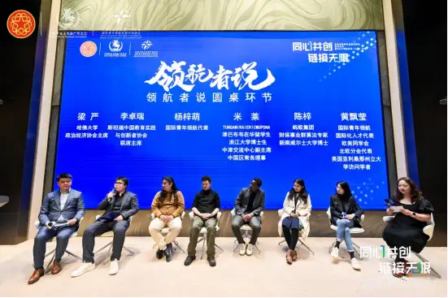
共商共议凝聚海归侨界青年人才，引领国际化青年社群青年思想政治方向和科技创文化创新发展的 2024“领航者说”（上海）沙龙活动，吸引了来自全球80余所知名高校的青年领袖参会，包括哈佛大学、牛津大学、斯坦福大学、芝加哥大学、哥伦比亚大学、清华大学、北京大学、浙江大学以及英国华威大学等顶尖学府的精英代表，来自不同学术背景，覆盖政治经济、科技创新、社会公益、法律服务等领域，充分展示了国际青年领袖的多元化与跨界合作的特质。这些青年领袖们不仅在各自领域内成就卓著，同时也肩负推动全球合作和创新的使命。中外青年和现场观众围绕沙龙主题《读懂中国、融入上海，发挥青年社群融通中外的桥梁作用》进行发言讨论。哈佛大学政治经济协会主席梁严、斯坦福中国教育实践与创新者协会联席主席李卓瑞、英国华威大学校友社群负责人朱虹慧，国际青年领航代表杨梓萌、黄飘莹，以及蚂蚁集团财保事业群算法专家、新南威士大学校友陈梓，津巴布韦在华留学生、中国津巴布韦交流中心代表、浙江大学博士米莱等参加圆桌论坛环节。分享了各自社群的经验和对未来的展望。他们一致认为，信息透明度、技术创新和政策支持对于青年个人的成长至关重要，并提出通过建立职业指导机制和增加实习及实践机会来帮助青年快速融入国际社会。
尤其是代表着科技创新的青年社群，通过探讨AI、数字化转型等热点话题，展示了他们在推动技术进步与社会发展的积极作用。美国哥伦比亚大学校友，达沃斯世界经济论坛、全球杰出青年社区-上海副执委陈晓彬，英国华威大学校友社群负责人朱虹慧联袂主持“领航者说”
金融证劵、新闻传媒及可持续发展等领域专家各抒己见，就如何解读中国政策、抓住机遇融入中国现代化，运用新媒体、讲好中国故事，新时代国际化青年的ESG责任，就全球化背景下青年发展的机遇与挑战展开深入探讨。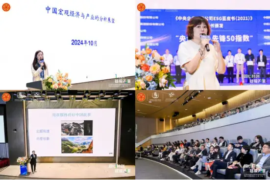
“领航者说”是中国华夏文化遗产基金会国际青年领航发展专项基金全力打造的展示国际青年领航者的网络互动平台和线下沙龙活动品牌。2023年“领航者说”沙龙启航黄浦，从线下到现场，参加此次上海沙龙中不少国际青年社群负责人是亲历者、参与者、见证者。
“领航者说”沙龙从上海、北京到深圳，吸引着包括全球名校青年社群负责人在内的数以百计国际青年领航者的积极参与。此次国际青年领航再度牵手黄浦区侨联举办这次沙龙，旨在深化拓展“领航者说”交流合作，成为当代国际青年社群交流与合作的重要平台。统计数据显示，超过40%的参会嘉宾代表社群在科技和创新领域深耕；30%活跃于公益和社群建设领域，这充分反映出新一代青年领袖在推动社会进步和技术创新方面的责任与担当；近20%的青年代表为女性领袖，展现出年轻女性在性别平等与社会治理领域的积极参与和领导力。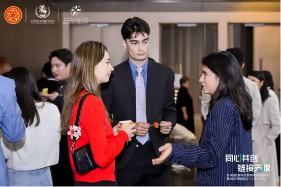
此次特邀嘉宾、法国留学生代表：对外经济贸易大学学生 Benoit Sentenac 孙博万 UIBE、同济大学学生Expert Pierre皮埃尔、华东师范大学亚欧商学院学生Clara Corcuff 高兰花、华东师范大学亚欧商学院学生 Gauthier Avognon 古奇、西班牙ESADE商学院学生 Alix Archambault 等应邀参加现场讨论，对“领航者说”平台给予了高度评价。他们表示，此行不仅增进了对中国文化和发展的理解，也结识了许多志同道合的伙伴。“海归人才和侨界青年既是连接中国与世界的重要纽带，也是推动国际化现代化大都市建设的中坚力量。”上海市侨联负责人表示，“我们希望通过全球名校青年社群共同体，汇聚全球青年力量，以青年创新思维为城市发展注入新的活力。”作为活动的主办单位，中国华夏文化遗产基金会国际青年领航发展专项基金和黄浦区侨联表示，基于长期对国际青年社群发展的关注，期望以新成立的上海黄浦海创青年领航发展中心为载体，服务全球名校青年社群共同体，并推动更多具有创新精神和社会责任感的青年领航者参与其中，成为新时代的领航力量。
中国华夏文化遗产基金会副秘书长苏润表示，“领航者说”沙龙启航于上海、启航于黄浦，必将从黄浦走向全国、走向全球。国际青年领航发展专项基金将继续着力发挥国际青年民间组织力量，让更多年轻人见证中国、了解中国、读懂中国，领航青春，共谱华章，成为新时代的记录者、弘扬者、加速者，成为当之无愧的国际青年领航者。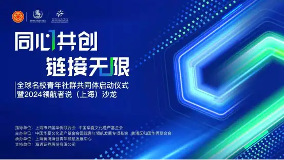